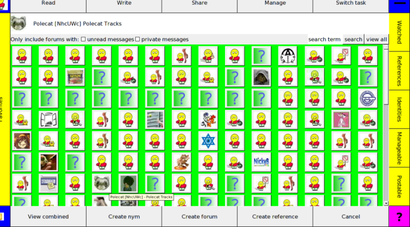
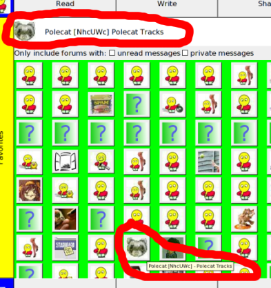
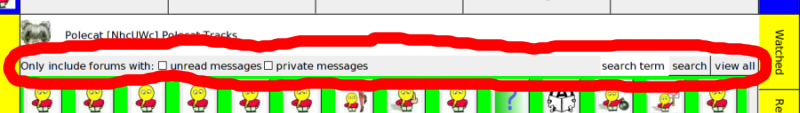
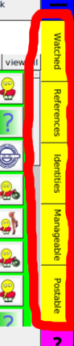
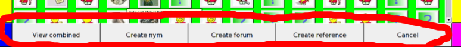

Syndie help - Forum selection panel
up

The Forum selection panel has a number of important display elements,
navigational controls, and action buttons. First, the main body of the
panel shows a grid of buttons displaying the avatars of forums matching
the selected criteria. As each is selected with the mouse or keyboard,
the summary of that forum is shown up top:

The user may click on any of the avatar buttons and proceed to that forum's
Thread tree panel. Alternately, if the
user wants to read messages in all of the displayed forums, they can select
the "view combined" button on the bottom.
The set of forums show can be controlled by the top control bar:

By checking the unread messages checkbox, only those forums containing
messages not yet read by the current user are shown. By checking the
private messages checkbox, only those forums containing private messages
readable by the current user are shown. By changing the search term
field to a keyword and hitting the search button, only those forums
whose name or description contains the given keyword are shown. Alternately,
by hitting the view all button, all known forums are shown.
The set of forums can also be controlled by the right hand presets bar:

By selecting the Watched preset, only those forums who have been added to
the user's "watched" list are shown. The References preset shows the user's
top level grouping of links to arbitrary resources - forums, messages, archives,
etc, as well as subgroupings. The Identities preset shows the forums that
the user has total control over - those forums that they have the private identity
keys for. The Manageable preset shows the forums the user has management
privilidges in - those they either have the private identity keys for or those they
only have a private management key that the forum lists as valid. The Postable
preset shows the forums the user has posting privilidges in, which includes any
forum they can manage, any forum that has explicitly authorized them to post in, and
any forum that allows anyone to post in.
The bottom row contains a list of actions that can be taken:

The view combined button, as mentioned above, brings up the
Thread tree panel listing the threads in all of
the shown forums. The create nym and create forum buttons both bring up
the Profile editor panel to create a new identity
(in Syndie, a nym is basically an identity that doesn't let anyone post to their scope,
while a forum is an identity that does). The create reference button brings
up a dialog to walk the user through finding a resource to reference and selecting where
in their reference grouping to place it. The cancel button, simply enough,
dismisses the Forum selection panel.